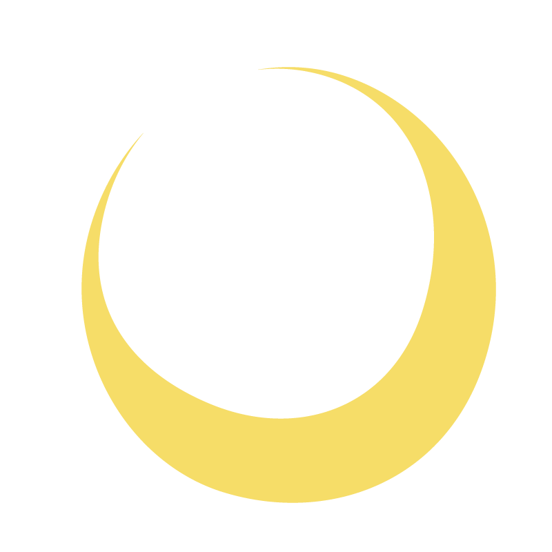

青バラ × 宇宙

月に行くという
不可能に思えたことが
叶ったことをモチーフに
青いバラは
銀河にも見えるように
工夫しました
THEME OF 2026

青バラ × 宇宙

月に行くという
不可能に思えたことが
叶ったことをモチーフに
青いバラは
銀河にも見えるように
工夫しました
局カラー
ICU祭を構成する
6つの局の色が背景に
実行委員がみなさまの
夢を叶えるお手伝いが
できますようにと、
想いを込めました
2026年度のICU祭のテーマは、「Blue Rose ～夢叶う～」です。
色とりどりの姿を見せる美しいバラですが、青いバラは自然界に存在しません。さらに、バラ単体が持つ色素の制約上、品種改良でも青いバラは創作できないことから、青いバラの花言葉は「不可能」でした。
しかし、幾年の研究の末、遺伝子組み換え技術を用いた青いバラが、2004年に誕生しました。
かつては「不可能」とされていた青いバラの誕生を機に、いつしかその花言葉には「夢叶う」が充てられるようになりました。
私達は一人一人が、夢を持っています。
今年度のICU祭が、誰かの夢が叶う場所、誰かが夢を見つける場所、誰かの夢を後押しできる場所であってほしい。
そんな思いが込められた、「Blue Rose ～夢叶う～」というテーマです。
※「夢かなう」は、一般的な青いバラの花言葉ではなく、「サントリーの青いバラアプローズの花言葉」です。